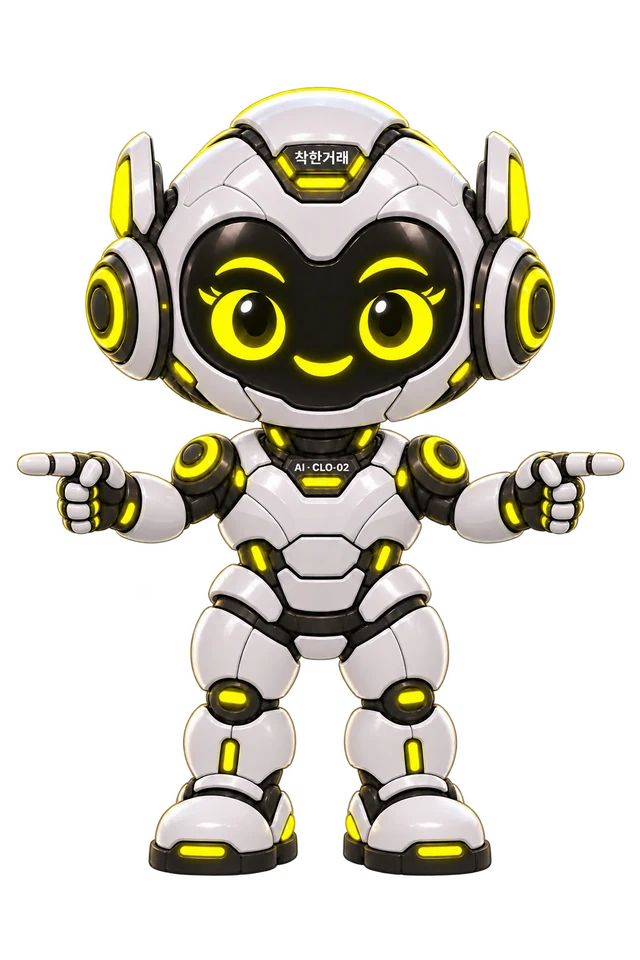

01
반갑게, 엄지척
인사를 건네며 차와 예산을 물어봐요.
안녕하세요, 클로이예요.원하는 차와 예산을
편하게 이야기해 주세요.
편하게 이야기해 주세요.
준비 중
CHLOE MOTION
시선을 따라 부드럽게 돌아보고, 작은 몸짓 뒤에 편안히 쉬는 클로이예요.
주변으로 포인터를 움직이거나 ‘다음 멘트’를 눌러 반응을 보세요.
인사를 건네며 차와 예산을 물어봐요.
준비 중
비교할 기준을 하나씩 짚어줘요.

준비 중
편하게 이야기할 수 있도록 안내해요.
준비 중
04 · FACE ONLY
웃는 얼굴 옆에서 짧은 말을 건네고,
말풍선도 자리를 살짝 바꿔요.
준비 중
말풍선에 마우스를 올리거나 키보드로 선택하면 읽는 동안 기다려요. 기기의 ‘동작 줄이기’ 설정을 따릅니다. 움직임을 사용할 수 없는 환경에서는 원래 이미지가 보입니다.
움직임과 말풍선, 이미지와 이 예제를 함께 묶었습니다. 멘트·크기·위치를 바꿔 다른 홈페이지에서도 사용할 수 있습니다.
// 캐릭터와 말풍선 파일을 불러온 뒤
const talk = ChloeDialogue.mount('#speech', {
character: '#my-chloe',
messages: [
{title: '어떤 차 찾으세요?',
body: '예산부터 알려주셔도 좋아요.'},
{title: '천천히 비교해 봐요.',
body: '궁금한 점을 편하게 말해 주세요.'}
],
interval: 8500
});
talk.next(); // 다음 멘트